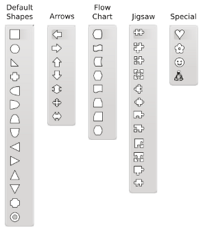
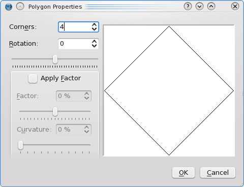
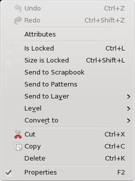

This would be useful, for example, for making an exact square or circle. The Origin relates to the point on the page where you clicked to bring up this dialog.
With shapes and polygons, you have a number of choices to make with each about what kind of shape or polygon to create. All of these are vector drawings, so you can freely resize or edit them after creation. Let’s start with shapes.
| Shapes are a collection of predetermined shapes, and with version 1.4.x have been greatly increased in number. The default shape when you start Scribus is the simple rectangular shape which the icon shows. Just to the right side of the shape figure on the toolbar is an arrow for a drop down list of subselections. Once you select from a drop down category and specific type (click with the mouse), you see the toolbar icon change to your selected shape. Note: the appearance of the Shapes icons has been enhanced in the image to the right – they will not appear as distinct as this.
As stated in Working with Frames, the default line and fill color for shapes and polygons is “None.” You can change that for the current documents in File > Document Setup > Tools > Shape (icon), and for future documents in File > Preferences > Tools > Shape (icon). Just like other frames, you simply click-drag from one corner of the shape to its opposite. If you hold down Shift while click-dragging, when you let up on the mouse the shape will fill to the margins of your page. |  |
|
Another option with shapes is to make your selection from the list, then simply click on the page, i.e., do not drag the mouse. This brings up a new dialog, Enter Object Size, in which you can make a shape of pre-determined dimensions.
This would be useful, for example, for making an exact square or circle. The Origin relates to the point on the page where you clicked to bring up this dialog. |
| Polygons in Scribus are regular polygons, which when drawn with equal width and height dimensions, will have equal sides and angles. Default is for 4 sides (corners), although you may have anything from 3 to 999 sides. The Polygons icon will always show a pentagon, but by selecting Properties from the drop-down you get the dialog to the right. As you see, your choices here are restricted to the geometry of the polygon. You can set defaults for line and fill colors and shading, and line thickness in File > Preferences > Tools > Shape (icon) or in File > Document Settings > Tools > Shape (icon). Your choices in File > Preferences > Tools > Polygon (icon) and in File > Document Settings > Tools > Polygon (icon) will be limited to what you see here in the Polygon Properties dialog.
Number of Corners and Rotation need no explanation, but note that the rotation can be set in the spinbox or with the slider. Apply Factor is not so intuitive, but the small preview will quickly show you that a factor of less than 0% will bend the sides inward at the midpoint, and greater than 0% bend them outward. Curvature transforms the angulated bend into a curve instead. |
 |
The best way to learn what the various settings do is simply to play with them then see the results. If you draw your polygon with unequal width and height, you will see various kinds of distortions compared to the small preview window. Below are some variations on a 4 and a 7-sided polygon which you might try to duplicate.
Just as with shapes, if you activate the polygons icon, then click the canvas, you will get the Enter Object Size dialog.
 |
|  | The context menu with shapes and polygons has fewer choices than with text or image frames.
|